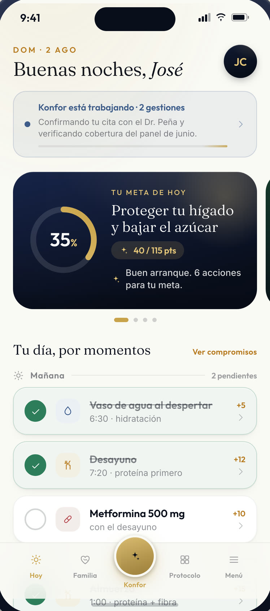
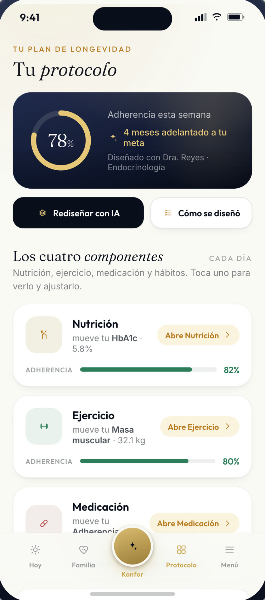
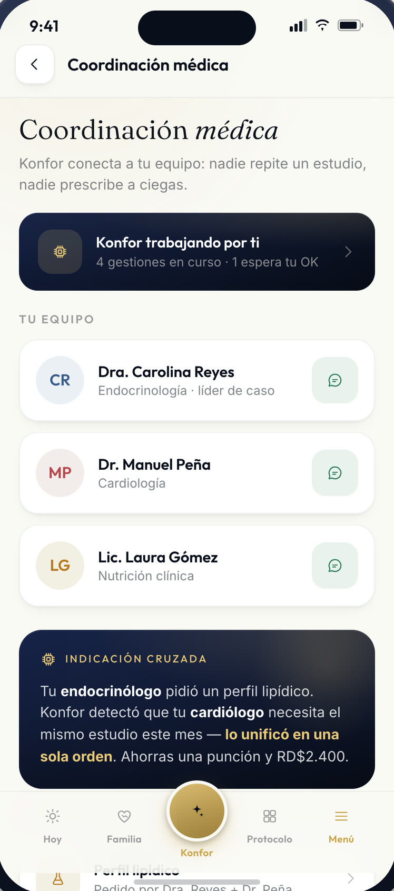
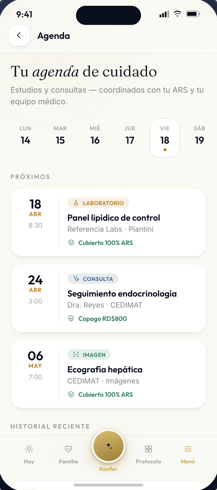
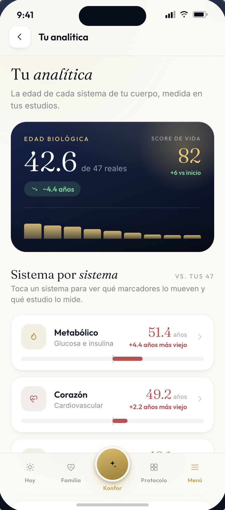
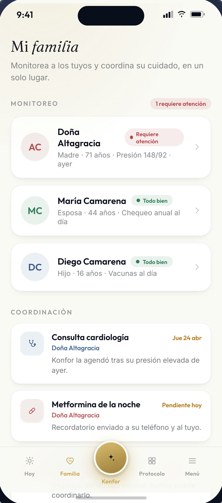
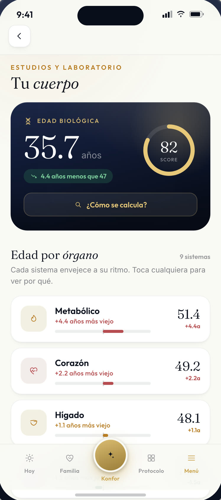
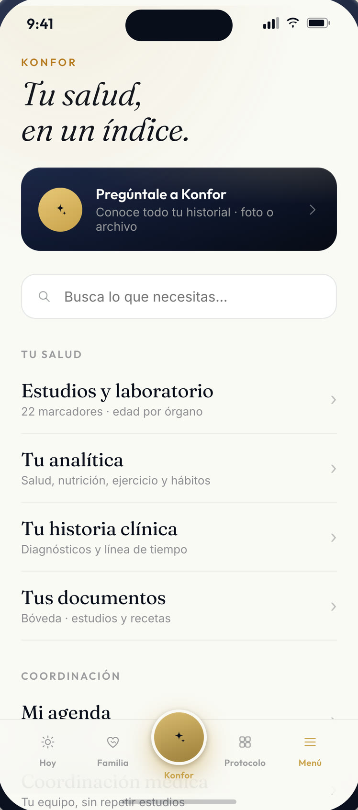

KONFOR Health
Suena el teléfono. No tuviste que marcar.
Todos los días, incluidos domingos.

KONFOR sigue tus señales todos los días, coordina lo que hay que hacer y mantiene informada a tu familia — con tu permiso.
Sí se encarga de que lo que tu médico indicó, se cumpla.
Un día cualquiera
Así se ve un martes.





7:10 a. m.
Se levanta. El teléfono ya sabe qué toca hoy.
7:40 a. m.
Dos pastillas, una caminata de veinte minutos, laboratorio el jueves.
9:00 a. m.
Suena: alguien pregunta cómo amaneció. Mientras tanto, KONFOR ya está confirmando su cita y verificando la cobertura.
1:00 p. m.
La cita del jueves quedó confirmada. Nadie tuvo que llamar dos veces.
5:30 p. m.
Hoy caminó menos. Mañana el plan lo toma en cuenta.
9:00 p. m.
Su hija abre la app. Todo en orden. Cierra y se duerme.
Modo simple
La misma app, dos maneras de usarla.
Si le gusta el detalle, ahí está: cada marcador, la edad de cada órgano, cómo se movió cada curva. Si prefiere una sola lista donde encontrar cada cosa, esa también es la app.
Nadie tiene que aprender a usar nada.


Qué incluye
Cuatro servicios. La mecánica, al reverso.
Al frente, lo que usted vive. Al voltearse, la mecánica que lo sostiene.
Enfermería
Enfermería, cuando hace falta. No cuando ya es tarde.
Lo que el sistema hace
- Visita programada a domicilio
- Toma de signos y curaciones
- Registro firmado con hora y responsable
- Nota al médico tratante
Terapia física
Volver a subir esa escalera.
Lo que el sistema hace
- Valoración funcional inicial
- Plan de fuerza y equilibrio
- Piscina calefactada e hidroterapia en el nodo
- Progreso medido cada mes
Nutrición
El menú del restaurante ya sabe lo tuyo.
Lo que el sistema hace
- Perfil nutricional por condición
- Menú del restaurante según ese perfil
- Seguimiento de peso y composición corporal
- Ajuste del plan cuando el dato cambia
Coordinación médica
Tu ARS, tu médico y el laboratorio, en una sola llamada.
Lo que el sistema hace
- Agenda de citas y recordatorios
- Laboratorio in situ en el nodo
- Gestión de autorización con su ARS
- Expediente que el médico sí lee
Lo que no se factura
La salud aguanta mejor cuando hay con quién.
El restaurante, la sala de lectura, el salón, el huerto y un kilómetro de senderos. No son amenidades: son la razón por la que alguien se levanta.
La familia
Tu hija va a saber. Tú decides cuánto.
Ella no ve tu expediente. Ve lo que tú autorizaste: que estás bien, que hoy caminaste, que la cita del jueves está confirmada.
Si algo se sale, se entera antes de preguntarte.
Puedes cambiar o quitar cualquier permiso cuando quieras, sin dar explicaciones.
Las dos pantallas no muestran lo mismo. Ese es el punto.
Cómo se empieza
Tres pasos. El primero es una conversación.
Una conversación de veinte minutos
Con una persona, no con un formulario. Para entender qué hace falta.
Valoración inicial
Laboratorio, historia y una escala funcional. Sin sorpresas.
Tu protocolo
Lo firma un médico. Empieza el lunes siguiente.
Nombre y teléfono. Al enviar, aceptas que te llamemos.
Los límites
KONFOR no diagnostica, no prescribe y no reemplaza a tu médico.
No es un asilo ni una residencia de cuidados.
No vende tus datos ni los comparte con aseguradoras sin tu permiso.
Ante una emergencia, llama a emergencias.
La capa de abajo
Por qué esto no falla el martes.
Un protocolo que depende de que alguien se acuerde, falla.
Cada paso tiene responsable, hora y un registro que no se puede borrar.
El procedimiento se cumple igual el lunes que el 24 de diciembre.
Usted no ve la tecnología. Solo nota que las cosas pasan.
Coordinación asistida por sistemas automatizados bajo supervisión humana. KONFOR no diagnostica ni prescribe.